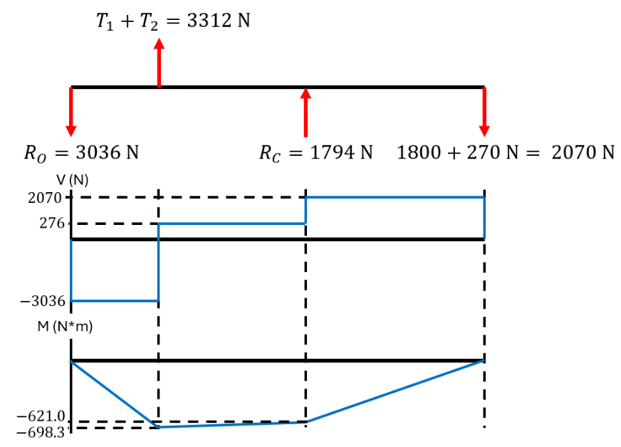

Module 1 - Introduction
Homework Problems
This set of recommended problems is designed to help you reinforce and apply the concepts covered in Module 1. The problem numbers correspond to those in Shigley’s Mechanical Engineering Design, 11th Edition.
Review of Free-Body Diagrams (FBDs) and Stress Analysis
- 3-80: Perform a stress analysis on a simply supported shaft with two attached pulleys.
- 3-91: Practice drawing FBDs and constructing shear force and moment diagrams for a scenario similar to an example discussed in class.
Review of Material Properties
- 2-2: Use Table A-21 to explore how different heat treatments affect material properties.
- 2-12: Estimate the ultimate strength of steel using a given Brinell hardness value.
- 2-22: Investigate and identify a "mystery material" based on its properties.
- 2-33: Apply Ashby charts to design a tie rod (a threaded bolt connecting the two halves of an engine's connecting rod).
Problem 3-80 Worked Solution
First, try to solve the problem yourself! Then, check your answers below.
(a) Determine the tensions in the belt on pulley B, assuming that the shaft is running at a constant speed.
(b) Find the magnitudes of the bearing reaction forces, assuming the bearings act as simple supports.
(c) Draw shear-force and bending-moment diagrams for the shaft. If needed, make one set for the horizontal plane and another set for the vertical plane.
(Note that the below diagrams are not necessarily drawn to scale.)

(d) At the point of maximum bending moment, determine the bending stress and the torsional shear stress.
The maximum bending moment occurs at B.
(e) At the point of maximum bending moment, determine the principal stresses and the maximum shear stress.
You can also find YouTube videos below for each part of this problem which guide you through the solution.
Problem 3-91 Answers
First, try to solve the problem yourself! Then, check your answers below.
Note: To get full credit for questions like this on a quiz or test, you'll need to show all of your work. Here, I may only providing the final answer for you to check. If you have questions on how to get here, please feel free to ask me during office hours, or send me an email.
(a) Determine the precise location of the critical stress element.
The critical stress element is located at the wall (at point A), either at the top or the bottom of the rod. Here, we'll choose the bottom because it is in tension.
(b) Sketch the critical stress element and determine magnitudes and directions for all stresses acting on it. (Transverse shear may only be neglected if you can justify this decision.)
(c) For the critical stress element, determine the principal stresses and the maximum shear stress.
Problem 2-2 Answers
First, try to solve the problem yourself! Then, check your answers below.
Note: To get full credit for questions like this on a quiz or test, you'll need to show all of your work. Here, I may only providing the final answer for you to check. If you have questions on how to get here, please feel free to ask me during office hours, or send me an email.
(a) AISI 1060 Q&T to 425
.(b) AISI 1060 Q&T to 650
Problem 2-12 Answers
First, try to solve the problem yourself! Then, check your answers below.
Note: To get full credit for questions like this on a quiz or test, you'll need to show all of your work. Here, I may only providing the final answer for you to check. If you have questions on how to get here, please feel free to ask me during office hours, or send me an email.
For steels, (in MPa)
So we find that, for this material, =935 MPa
Problem 2-22 Solution
First, try to solve the problem yourself! Then, check your answers below.
Tests (a), (b), and (c) are all simple and inexpensive.
We might start with a visual inspection (looking at it), and this alone eliminates many materials from Table A-5 based simply on appearance (brass, copper, glass, douglas fir, etc.).
Next, let's say we try (c). Finding that it isn't magnetic, we eliminate all of the ferrous materials (carbon steel, cast iron, etc.).
Next, let's try (d). Weighing the material is easy, fairly inexpensive, and will tell us the density of the material. We find that it weighs 12.900 N, so the density (unit weight, in Table A-5) is . The materials with densities closest to this value in Table A-5 are glass (which we eliminate based on the visual inspection) and aluminum.
So, this material is most likely some type of aluminum alloy.
Problem 2-33 Solution
First, try to solve the problem yourself! Then, check your answers below.
Note: To get full credit for questions like this on a quiz or test, you'll need to show all of your work. Here, I may only providing the final answer for you to check. If you have questions on how to get here, please feel free to ask me during office hours, or send me an email.
The tie rod is subject to axial loading, so . We find that steel, titanium, aluminum alloys, and composites would all be good choices for a light, stiff, and strong tie rod.
(Don't forget that the question asks for a ductile material that would be best suited for this tie rod, which eliminates things like ceramics.)